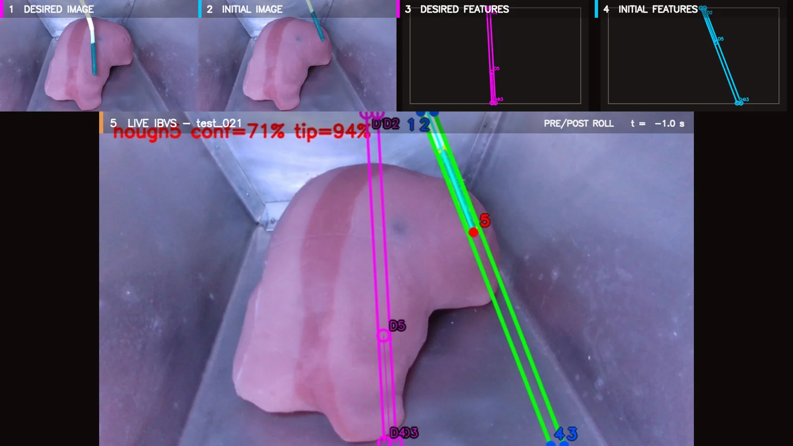

Commande RCM et asservissement visuel avec Franka FR3.
Développement et validation d’une plateforme de manipulation d’une sonde laparoscopique avec contrainte de pivot et guidage RGB-D.
Institut Pascal · SIGMA Clermont2026
Plateforme de test avec Franka FR3 et fantôme de foie
01 / Le problème
Le problème
La manipulation d’une sonde laparoscopique exige de maintenir son axe aligné avec un point d’insertion fixe, tout en corrigeant sa position grâce aux observations d’une caméra externe.
02 / Mon travail et la démarche
Mon travail et la démarche
J’ai travaillé sur la commande cartésienne en vitesse et impédance, la définition du centre de rotation distant (RCM), la calibration eye-to-hand de la caméra RealSense et la boucle IBVS à cinq caractéristiques visuelles. Une hiérarchie de tâches permet de préserver la contrainte RCM pendant la commande de la pointe.
4/5essais sélectionnés avec erreur finale de translation < 2 mm
< 0,3 mmrésidu RCM maximal sur 5 essais sélectionnés
03 / Résultats et enseignements
Résultats et enseignements
Lors de cinq essais représentatifs en boucle fermée, l’erreur de translation est passée de ~55–129 mm à 0,08–2,51 mm. Quatre essais ont terminé sous 2 mm, avec un résidu RCM maximal inférieur à 0,3 mm. Ces métriques reposent sur la cinématique du robot et sur la géométrie d’outil configurée, et ne constituent pas une validation clinique.
LAnD / 2026
Recherche associée : LAnD et premier contact
Le manuscrit collectif « Visual Servoing of a Laparoscopic Ultrasound Probe without a Target Image » approfondit l’approche LAnD, qui associe la visée du chirurgien, l’IBVS, le contrôleur RCM et la détection de contact par effort. Les essais de l’équipe montrent un contact initial à moins de 1 cm de la zone visée, avec un pic de force de 4,26 ± 0,38 N dans les essais présentés. Ces valeurs décrivent le système expérimental et ne constituent pas une validation clinique.
Résultats de l’équipe tels que décrits dans le manuscrit ; contribution individuelle détaillée dans le rapport de stage.
Vidéo des expérimentations
Démonstration vidéo de la plateforme Franka FR3, des déplacements sous contrainte RCM, de l’asservissement visuel et de l’approche jusqu’au contact sur un fantôme.
04 / Images et résultats du projet
Images et résultats du projet
Plateforme de test avec Franka FR3 et fantôme de foieEssai physique du contrôleur avec point d’insertion contraint

Visualisation des caractéristiques D1–D5 durant l’IBVSCourbes de convergence visuelle et erreur de pivot